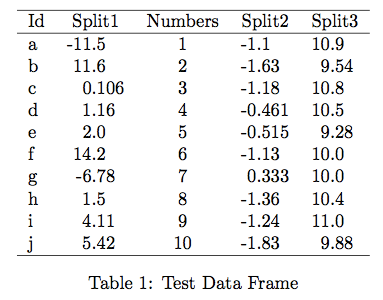

Function for Generating LaTeX Tables with Decimal Aligned Numbers
The xtable package is tremendously useful for generating LaTeX tables from data frames. It is also pretty easy to customize the output to handle some special cases of LaTeX formatting. The xtable.decimal function will create a LaTeX table where numeric columns will be vertically aligned on the decimal point. In addition to specifying the LaTeX alignment code it will also create appropriate column titles so that the column name spans the two resulting columns. In the following example, we create a data frame with five columns, three of which are numeric that we want to display with aligned decimal places. We also have a column of type character and another of type integer.
> df <- data.frame(Id=letters[1:10],
Split1=rnorm(10, mean=0, sd=10),
Numbers=1:10,
Split2=rnorm(10, mean=-1, sd=.5),
Split3=rnorm(10, mean=10, sd=.75))
#A whole number because prettyNum will not print anything after the decimal point.
> df[5,'Split1'] = 2
> df
Id Split1 Numbers Split2 Split3
1 a -11.4957434 1 -1.0974334 10.895100
2 b 11.5985173 2 -1.6314018 9.539108
3 c 0.1062397 3 -1.1795816 10.788935
4 d 1.1586916 4 -0.4612825 10.462340
5 e 2.0000000 5 -0.5154210 9.279148
6 f 14.1508151 6 -1.1308398 10.001278
7 g -6.7793246 7 0.3325152 10.026043
8 h 1.4984447 8 -1.3638784 10.373774
9 i 4.1131184 9 -1.2390835 10.996286
10 j 5.4228637 10 -1.8332372 9.881770
> str(df)
'data.frame': 10 obs. of 5 variables:
$ Id : Factor w/ 10 levels "a","b","c","d",..: 1 2 3 4 5 6 7 8 9 10
$ Split1 : num -0.5072 13.3672 -0.0906 -9.5944 2 ...
$ Numbers: int 1 2 3 4 5 6 7 8 9 10
$ Split2 : num -1.359 -0.722 -1.341 -0.359 -1.022 ...
$ Split3 : num 9.87 10.29 9.55 8.51 10.36 ...The xtable.decimal function (source code below) has five parameters:
xthe data frame to convert.colsthe columns to align. This defaults to columns of typenumericbut can be specified explicitly as a numeric vector specifying the column position withinx.colAlignmentall non-aligned columns will be aligned left (i.e.l) by default. If you wish to align any columns right (r) or centered (c), then create a named vector where the name corresponds to the column name (as identified bynames(x)) and the value the new alignment.tocharFunthe function that will be used to convert the column to a character vector. This isprettyNumby default....other parameters that are passed totocharFun,xtable, andprint.xtable.
Here we will create the LaTeX table for the data frame created above.
xtable.decimal(df, digits=3,
colAlignment=c(Numbers='c'),
caption.placement='bottom',
caption='Test Data Frame')And the resulting table as it appears in the PDF:

Link to xtable.decimal.r as a Gist.
require(xtable)
#' Prints a LaTeX table with numeric columns aligned on their decimal points.
#'
#' This function wraps the \code{\link{xtable}} and \code{\link{print.xtable}}
#' functions in the \code{xtable} package so that numeric columns are aligned
#' on their decimal place.
#'
#' See \url{http://jason.bryer.org/posts/2013-01-04/xtable_with_aligned_decimals.html}
#' for more information.
#'
#' @author Jason Bryer <jason@@bryer.org>
#' @param x a data frame to create a LaTeX table from.
#' @param cols a numeric vector indicating which columns should be aligned on
#' decimal points. It defaults to all columns of type numeric.
#' @param colAlignment named character vector where each element name corresponds to a
# column name and the value is the LaTeX alignment (i.e. l, r, or c).
#' @param tocharFun the function used to convert the numeric vecotr to a character
#' vector. This defaults to \code{\link{prettyNum}}, but other possible
#' options are \code{\link{as.character}}, \code{\link{format}},
#' \code{\link{formatC}}, or some other custom function.
#' @param ... other parameters passed to \code{tocharFun}, \code{\link{xtable}},
#' and \code{\link{print.xtable}}.
#' @seealso xtable
#' @export
xtable.decimal <- function(x,
cols=which(lapply(x, class) == 'numeric'),
colAlignment,
tocharFun=prettyNum,
...) {
splitCol <- function(x, ...) {
s <- strsplit(tocharFun(x, ...), split='.', fixed=TRUE)
right <- sapply(s, FUN=function(x) { ifelse(length(x) == 2, x[2], '0') })
left <- sapply(s, FUN=function(x) { x[1] })
data.frame(left=left, right=right, stringsAsFactors=FALSE)
}
cols <- cols[order(cols, decreasing=TRUE)]
colnames <- names(x)
for(i in cols) {
if(i == 1) {
tmp <- cbind(splitCol(x[,1], ...), x[,2:ncol(x)])
names(tmp)[1:2] <- paste(names(tmp)[1], c('left','right'), sep='.')
names(tmp)[3:ncol(x)] <- names(x)[2:ncol(x)]
x <- tmp
} else if(i == ncol(x)) {
tmp <- cbind(x[,1:(ncol(x)-1)], splitCol(x[,ncol(x)], ...))
names(tmp)[1:(ncol(tmp)-2)] <- names(x)[1:(ncol(x)-1)]
names(tmp)[(ncol(tmp)-1):ncol(tmp)] <- paste(names(x)[ncol(x)],
c('left','right'), sep='.')
x <- tmp
} else {
tmp <- cbind(x[,1:(i-1)], splitCol(x[,i], ...), x[,(i+1):ncol(x)])
names(tmp)[1:(i-1)] <- names(x)[1:(i-1)]
names(tmp)[i:(i+1)] <- paste(names(x)[i], c('left','right'), sep='.')
names(tmp)[(i+2):ncol(tmp)] <- names(x)[(i+1):ncol(x)]
x <- tmp
}
}
colnames[cols] <- paste('\\multicolumn{2}{c}{', colnames[cols], '}', sep='')
colnames <- paste(colnames, collapse=' & ')
addtorow <- list()
addtorow$pos <- list()
addtorow$pos[[1]] <- c(0)
addtorow$command <- paste( colnames, ' \\\\ ', sep='')
align <- rep('l', ncol(x))
if(!missing(colAlignment)) {
for(i in seq_along(colAlignment)) {
align[names(x) == names(colAlignment)[i]] <- colAlignment[i]
}
}
align[grep('.left$', names(x), perl=TRUE)] <- 'r@{.}'
align <- c('l', align) #Add an alignment for row names
xtab <- xtable(x, align=align, ...)
print(xtab, add.to.row=addtorow, include.rownames=FALSE, include.colnames=FALSE, ...)
}